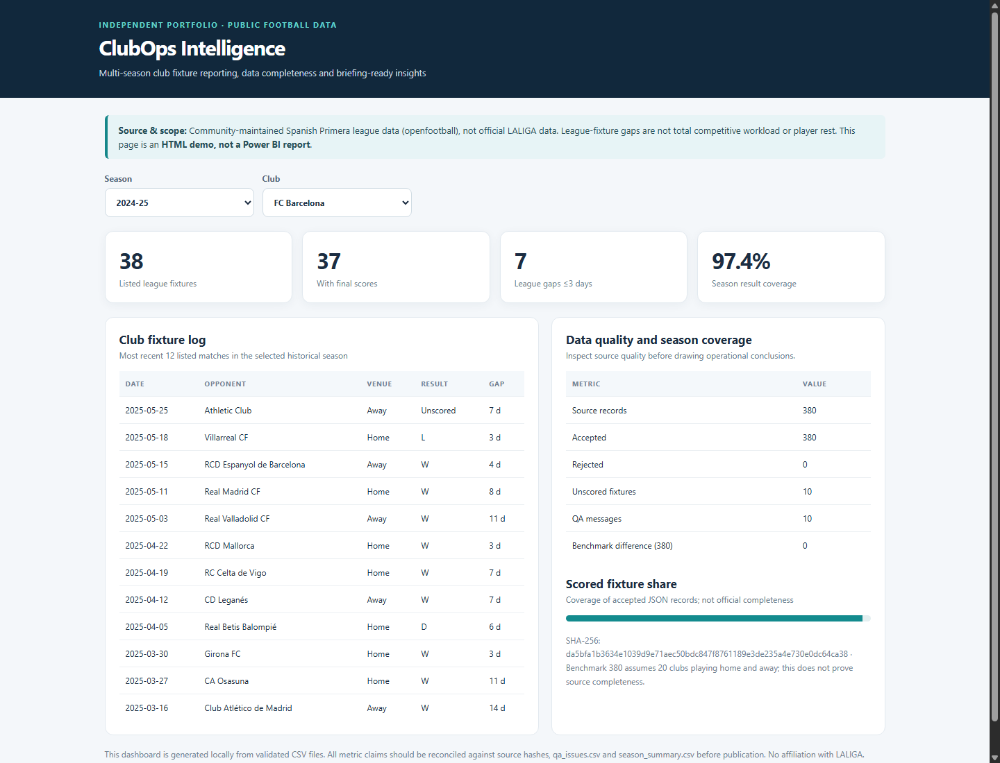
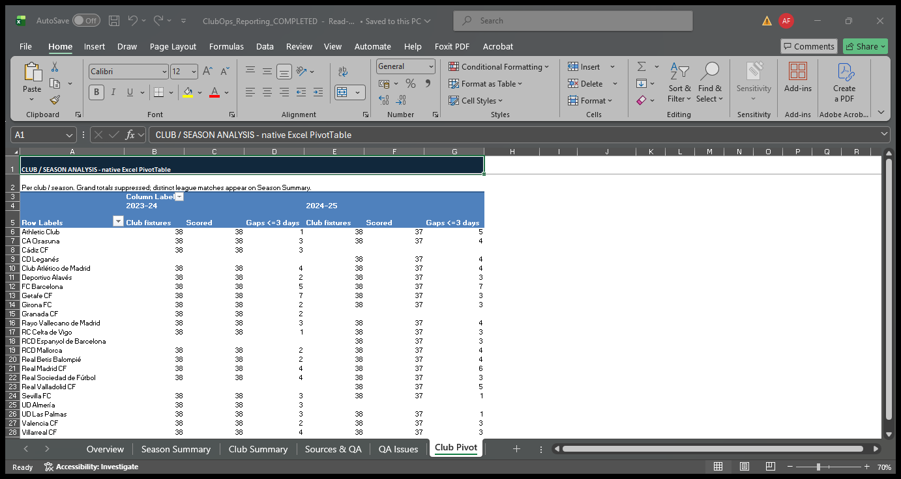

FOOTBALL OPERATIONS / INDEPENDENT PORTFOLIO
The fixture calendar.
With the evidence attached.
A clear view of league schedules, short calendar gaps and the data behind every number.
Spanish Primera · 2023–24 and 2024–25 · Historical public data
Open in your browser. No account, installation or download required.

THE BUSINESS QUESTION
Before discussing the schedule,
know what the data can support.
A simulated Club Office analyst needs to compare league calendars and prepare a traceable meeting briefing. Separate season files make recurring reporting harder. Missing scores can quietly turn a complete-looking fixture list into an incomplete results report.
This demonstration brings the calendar and its quality checks into the same conversation.
ONE CLUB, TWO SEASONS
Barcelona’s short league gaps:
five, then seven.
The count of gaps of three calendar days or less rises from five in 2023–24 to seven in 2024–25.
A starting point for further calendar review. League gaps are not player rest, fatigue or total workload; cup and European fixtures are excluded.
Inspect Barcelona’s fixture log →QUALITY IS PART OF THE RESULT
380 fixtures does not mean
380 known results.
The 2024–25 snapshot contains 370 scored fixtures and ten unknown Matchday 38 results. They stay unknown throughout the report.
FROM RECORDS TO REPORTING
A small, traceable workflow.
- 01
Collect
Keep exact public source files and their fingerprints.
- 02
Check
Account for every record. Make warnings and unknown scores visible.
- 03
Compare
Use the same club and season definitions across Excel and the dashboard.
- 04
Brief
Generate a rules-based summary linked back to source rows.

ANALYSIS PEOPLE CAN INSPECT
Real Excel reporting.
Clear delivery boundaries.
A populated workbook with tables, formulas and a native season/club PivotTable. Its totals and saved report were checked in Excel 16.0.
Download Excel workbookThe Power BI project has three authored report pages and passed static schema checks. Desktop refresh, rendering and DAX execution remain pending. No Power BI screenshot is claimed.
Download PBIP source projectSOURCE & LIMITS
Public evidence. Honest limits.
Community-maintained openfootball data, with its CC0 dedication retained. Exact source URLs and hashes are available in the provenance record. This is not official or live LALIGA data.
The briefing reconstructs a downloaded historical file, not a schedule archived as known at that time. No financial, attendance, private operations or measured business-impact claims are made. No LLM or Power Automate workflow is implemented.